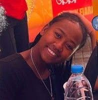

Pour toi, Nirina
J'ai un truc à te dire. Rien de grave, promis. Enfin... ça dépend comment tu le prends.
Lire la suiteNirina,
Il a fallu que je me pose devant mon écran pour me rendre compte d'un truc : t'es bien toi
Comme prévenu, voilà le fameux lien dont je t'avais parlé. C'est de l'inspiraka sendra nandalo :)
Bref, j'ai mis du soin dans ce petit coin du web. Dis-moi si tu valides, ou si tu vas trouver le moyen de critiquer !
— Ronan
Ce que je voulais surtout que tu retiennes
C'est de l'inspiraka sendra nandralo mais fait avec le coeur